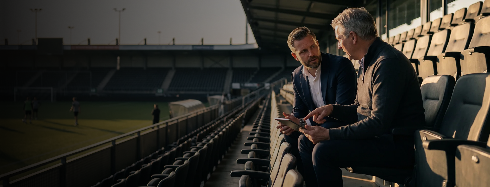
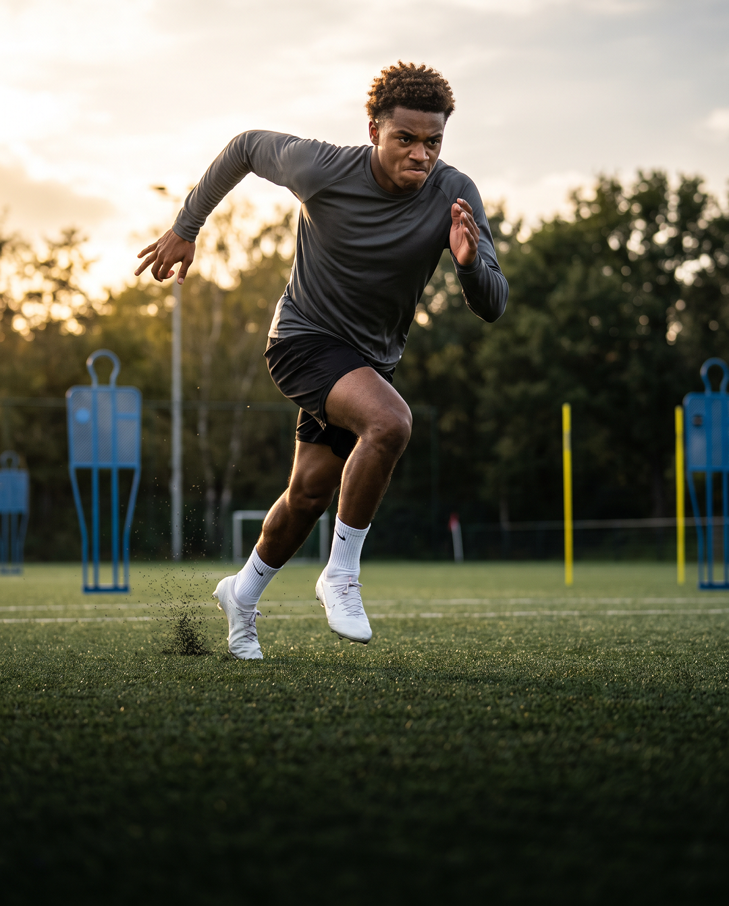

Leren kennen
We luisteren naar jou en je ouders aan de keukentafel. Je vertelt hoe het gaat en waar je naartoe wilt. Samen kijken we of Home11 bij jullie past.
We nemen de onzekerheid weg door je precies te laten zien wat er gebeurt, van de eerste kennismaking aan de keukentafel tot het telefoontje dat je ook na de overstap gewoon blijft krijgen.
We luisteren naar jou en je ouders aan de keukentafel. Je vertelt hoe het gaat en waar je naartoe wilt. Samen kijken we of Home11 bij jullie past.
 02
02We maken samen een helder plan voor je ontwikkeling en volgende stap. Jij en je ouders denken mee en krijgen de afspraken op papier.
 03
03We benaderen clubs die bij je plan passen en houden jullie op de hoogte. Jij blijft trainen; samen beslissen we welke kans bij je past.
Ook na je overstap blijven we bellen en betrokken. Je houdt één vast aanspreekpunt voor vragen over je club, je ontwikkeling en hoe het met je gaat.


Je speelt goed en clubs tonen interesse. Wij helpen je kiezen waar je echt kunt spelen en groeien.
Samen met jou en je ouders vergelijken we de opties. We kijken naar je rol in het team, de begeleiding en de ruimte om jezelf te ontwikkelen. De eerste kans is niet altijd de beste.
We voeren de gesprekken, leggen afspraken helder uit en blijven ook na je overstap betrokken. Zo zet je een volgende stap met een plan dat bij jou past.
Afgevallen bij je club? We nemen de tijd voor de teleurstelling en kijken samen met jou en je ouders vooruit.
Je blijft trainen en werkt aan je fitheid terwijl wij passende clubs benaderen. We bespreken wat je nodig hebt en waar je weer aan spelen en groeien kunt toekomen.
We zijn eerlijk over de kansen en houden je op de hoogte van ieder gesprek. Met één vast aanspreekpunt naast je werk je stap voor stap aan een nieuwe start.
We doen veel voor je, en dat werkt alleen als het van twee kanten komt. Dit vragen we terug.
Jouw inzet op het veld is het eerste wat clubs zien, en het is het enige wat wij niet voor je kunnen doen.
Of het nu goed loopt of even niet, we kunnen je alleen goed helpen als we weten wat er speelt bij de club en thuis.
Soms hoor je iets wat je liever niet hoort over je spel of een keuze. Je laat het bezinken voordat je reageert.